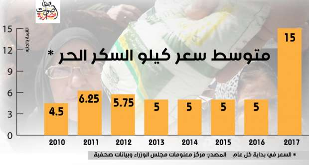

أحدث الأخبار
- باولو يقود هجوم الزمالك أمام رينجرز في دوري الأبطال
- المالية تعفي المطاعم غير السياحية من ضريبة القيمة المضافة بشروط
- "القضاء الإداري" يلزم الجامعة الأمريكية بتحصيل مصروفاتها بالجنيه المصري
- البورصة ترتفع بنسبة 0.52% في نهاية التعاملات
- إعادة فتح موانىء السويس بعد تحسن الأحوال الجوية
- محام: حفظ التحقيقات مع منى مينا في اتهامها بنشر أخبار كاذبة
- نجوى سالم .. كوميديانة انتهت حياتها بمأساة
- الأرصاد: طقس مائل للدفء الاثنين.. والعظمى في القاهرة 22
في ذكرى الثورة.. نار الأسعار تحرق حلم المصريين بالعيش والحرية
عندما خرج الناس في يناير 2011 مطالبين بالعيش والحرية والعدالة الاجتماعية لم يتوقعوا أن بعضهم قد يكتفي فقط بالعيش المدعم بعد 6 سنوات من الثورة.
محمد عوض، كاتب مستقل شارك في ثورة يناير، وهو زوج منذ ثلاثة أشهر فقط، لا يهتم حاليا بالحراك السياسي بقدر اهتمامه بحراك الأسعار.
"قبل الثورة كنت بصرف في الأسبوع 50 جنيه، مواصلات وأكل وأحيانا أوفر أيضا، وقبل زيادات نوفمبر الماضي، كانت الخمسين جنيه تكفيني لمصاريف يومين، أما بعد الزيادات فالخمسين جنيه بقت تكفي يوم واحد فقط، بصرفها على نفس الحاجات، أكل ومواصلات فقط"، كما يقول عوض.
منذ بداية الثورة وحتى منتصف 2014 كان معدل النمو الاقتصادي مستقرا حول 2%، ومع ذلك فإن معدل ارتفاع الأسعار كان يتراوح بين 10.4% إلى 12.5% في المتوسط، باستثناء عام 2012، الذي شهد انخفاضا كبيرا في التضخم ليصل إلى 4.7%.
في منتصف عام 2014، بدأت الحكومات المصرية في اتخاذ بعض التدابير الاقتصادية بغرض تخفيض عجز الموازنة وتقليل الأعباء على الحكومة، مما أثر على معدلات زيادة الأسعار في العامين الأخيرين 2015 و2016.
وبلغ معدل التضخم 24.3% في نهاية 2016، عقب قرارات 3 نوفمبر الشهيرة، بتعويم سعر الجنيه ورفع أسعار الوقود، والتي سبقتها قرارات أخرى ذات آثار تضخمية، منها إقرار ضريبة القيمة المضافة بنسبة 13%، بدلا من ضريبة المبيعات التي كانت نسبتها 10% من قيمة المُنتج، ومنها ايضا رفع أسعار الكهرباء.
تعتبر السجائر هي النموذج الأشهر على ارتفاع الأسعار بشكل مستمر، حيث زاد سعرها 6 مرات خلال الست سنوات الماضية، فالدولة تحصل على ميزة كبيرة من رفع أسعار السجائر أو رفع الضريبة عليها، كونها، عبر شركة الشرقية للدخان، تحتكر إنتاج السجائر، كما إنه يصعب توجيه اللوم إليها لرفعها الضريبة على تلك السلعة، لإنها تُصنف كضريبة مانعة، تهدف إلى تقليل استهلاك السجائر لأضرارها على الصحة العامة للمواطنين.
وقد ارتفع سعر علبة سجائر كليوباترا بوكس فئة 20 سيجارة من 3 جنيهات قبل الثورة إلى 12.75 جنيه حاليا، بزيادة 325% في 6 سنوات.
"أنا لا أدخن السجائر.. لكن أدخن الشيشة"، كما يقول عوض، الذي يشكو من زيادة سعر "الحجر" 100% في جميع المقاهي التي يرتادها في 2016، "كما أن المقاهي أصبحت تعتمد على أنواع فحم رديئة".
على عكس السجائر والمعسل كان السكر، الذي اتسم سعره بالاستقرار لدرجة الثبات لسنوات، هذه السلعة التي تقوم مصر بإنتاجها بكثافة، ولا تتعرض كثيرا للصدمات الخارجية نتيجة اعتمادها على زراعة القصب والبنجر داخل مصر، هذا بالإضافة إلى تدخل الدولة في السوق عبر توزيع السكر على بطاقات التموين، وأيضا فرض رسوم حمائية على وارداته.
كيلو السكر الحر كان سعره حوالي 6.25 جنيه في مطلع 2011، وانخفض في 2012 إلى 5 جنيهات بسبب توسعات في إنتاج المصانع محليا، واستقر عند هذا المستوى حتى الربع الأخير من 2016، عندما حدثت أزمة في الإنتاج والتوزيع رفعت سعر كيلو السكر لمستويات قياسية وصلت إلى 15 جنيها.

اتسمت أيضاً أسعار الوقود باستقرار نسبي حتى منتصف 2014، باستثناء رفع بسيط في أسعار أسطوانات البوتاجاز في عهد الرئيس المعزول محمد مرسي، أو استغلال بعض التجار لنقص كميات الوقود والبوتاجاز في رفع أسعار الوقود.
وفي منتصف 2014 قامت الحكومة بزيادة أسعار الوقود، وتم رفع سعر بنزين 92 من 1.85 جنيه إلى 2.60 جنيه، ثم رفعته الحكومة مرة أخرى في نوفمبر 2016 إلى 3.50 جنيه.
وساهم رفع أسعار الوقود في زيادة تكلفة النقل والمواصلات بنسبة 21.6% في 2014، و22.8% في 2016، وهي معدلات ارتفاع أعلى من المتوسط العام لمعدل الأسعار.
ويستحوذ بند النقل والمواصلات على 6.3% من إنفاق المصريين، بينما يستحوذ الطعام والشراب على 34.4% من الإنفاق، كما يخصص المصريون 17.5% من إنفاقهم للمسكن ومستلزماته من فواتير مياه وكهرباء وغيرها.
وفيما يخص الحبوب واللحوم فقد شهدت أسعارها تحركات طفيفة بعد الثورة، لكنها تضاعفت بشكل عنيف في العام الأخير، نتيجة صعوبات الاستيراد، وهو نفس الوضع فيما يخص مواد البناء.
ويقول عوض "أسعار الخضار تزيد مرة وتثبت مرة، أنا قللت استهلاكي من الأكل بالفعل، أما المطاعم الشعبية مثل الكشري فأصبحت تقدم وجبات بسعر أعلى وجودة أقل".
أكثر ما يؤلم عوض هو ارتفاع أسعار الأدوية والمستلزمات الطبية "أرتدي حذاء طبيا، سعره زاد خلال عامين ونصف من 275 إلى 435 جنيه، ولا أستطيع الاستغناء عنه، آخر مرة وقفت أمام السعر 10 دقائق.. أقارن بين تكلفة الحذاء أو العلاج.. فوجدت تكلفة العلاج أعلى فاشتريت الحذاء".
ويقول عوض "أصبحت اتخوف من انتهاء الأدوية.. واستخدم أدوية أقل سعرا وفاعلية".
ليس من المتوقع أن يتوقف ارتفاع الأسعار في الفترة المقبلة، فوفقا لوثيقة قرض صندوق النقد لمصر، الصادر ة الأسبوع الماضي، يتوقع صندوق النقد الدولي والحكومة المصرية استمرار ارتفاع الأسعار في السنوات القادمة ولكن بوتيرة أقل.
"لا أفكر في المستقبل، ولا أربط التفكير في إنجاب الأطفال بالأسعار، كلما حاولت تخيل المستقبل الصعب أشعر بالصدمة وأتوقف عن التفكير "، هكذا ينهي عوض كلماته.
وتتوقع هبة الليثي، مستشار رئيس الجهاز المركزي للتعبئة العامة والإحصاء، وأستاذة الإحصاء بكلية الاقتصاد والعلوم السياسية فى جامعة القاهرة، ارتفاع معدلات الفقر خلال الفترة المقبلة.
وتقول "طبعا معدلات الفقر سترتفع للغاية.. وأتوقع أن تصل نسبة الفقر إلى 35% من الشعب المصري في 2017".
وزادت نسبة المصريين الذين يعيشون تحت خط الفقر إلى 27.8% من السكان في 2015، مقابل 26.3% قبلها بسنتين، وفقا للبيانات الحكومية لبحث الدخل والإنفاق، الذي تشرف هبة الليثي على إعداده.
"الخطورة تكمن في طريقة تكيف الناس مع ارتفاع الأسعار، حيث سيتجهون إلى الاعتماد على أغذية أرخص ولكنها أقل جودة وأكثر إضرارا بصحتهم، خاصة الأطفال، وسيتجه البعض لوقف تعليم أبنائه"، كما تقول مستشارة الجهاز.
وشككت الليثي في قدرة برامج الدعم الحكومية مثل معاشات التضامن الاجتماعي وبرامج الدعم التمويني والدعم النقدي (تكافل وكرامة) على تلبية احتياجات المصريين تحت خط الفقر.
"هذه مسكنات.. المكافحة الحقيقية للفقر تتم عن طريق زيادة الإنتاج وفرص العمل"، كما تؤكد هبة.
ووفقا لبحث الدخل والإنفاق لعام 2015، فإن كل فرد يقل دخله عن خط الفقر (482 جنيها شهريا) فهو فقير، أي أن الأسرة المكونة من 4 أفراد تُعتبر فقيرة حال كان دخلها الشهري أقل من 1928 جنيهاً في 2015.
"بعد معدلات التضخم المرتفعة، يمكن أن نضيف 30% أو 40% على هذا الرقم لنتوقع خط الفقر الجديد في 2017"، بحسب أستاذة الإحصاء.
الاخبار المتعلقة


{kind=link}
تعليقات الفيسبوك